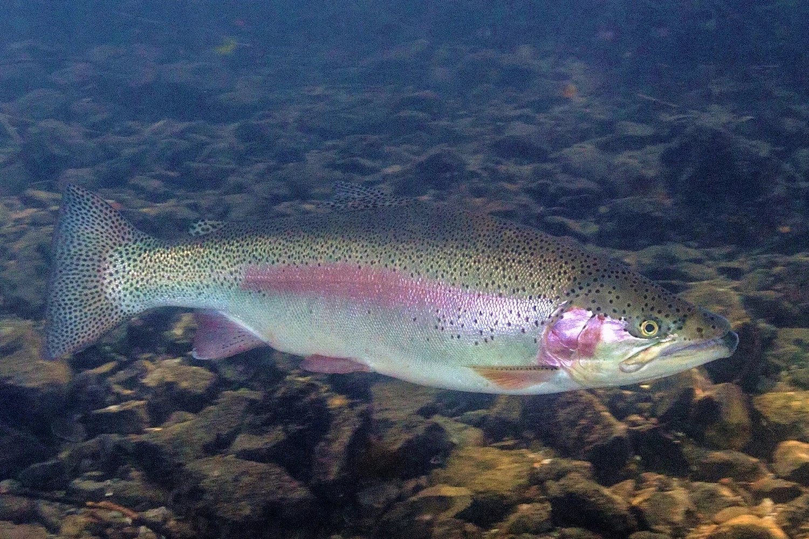

Here Are The U.S. Freshwater Fish State Records.
What I've Done So Far
-
Fish I've Caught
- Rainbow Trout 
- Large-Mouth Bass
- Catfish
-
Places I Have Fished
- Mississippi
- New York
- Arkansas
Bucket List
-
Fish I Want To Catch
- Sturgeon
- Small-Mouth Bass
- Shark (Any kind)
-
Places I Want To Fish
- Gulf of Mexico
- Florida Pan-handle
- Teton Mountains